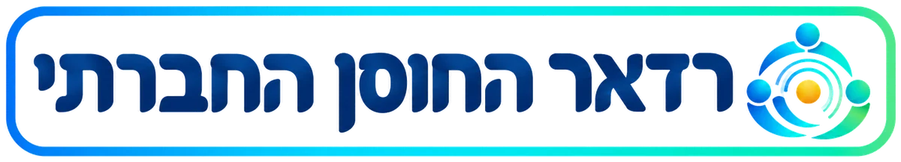

הרדאר מבוסס על ״סריקת אופק״ ו״מיפוי מניעים״ מתוך ערכת Futures Toolkit. אוספים יחד אותות קטנים לשינוי, שאנשים שמים לב אליהם בחיים, בעבודה ובחדשות. מקבצים אותם למניעי שינוי, ומחליטים מה מהם דורש פעולה עכשיו, ממה כדאי לבנות תרחישים, ואחרי מה כדאי רק לעקוב.
אין כרגע חיבור לבינה המלאכותית. בינתיים אפשר לעיין בדוגמה, להוסיף אותות ולמקם מניעים ידנית.
אות הוא משהו קטן ששמנו לב אליו ועשוי לבשר על שינוי גדול יותר: דבר חדש שקרה, הרגל שמשתנה, ידיעה בחדשות, מחקר או תלונה שחוזרת. כדאי לחפש גם בתחומים שפחות מדברים עליהם בישראל, כי העתיד תמיד מפתיע.
מניע שינוי הוא כוח גדול שעומד מאחורי כמה אותות, למשל ״התחממות והתגברות גלי החום״. ה־AI יכול לקבץ את האותות למניעים, ואפשר גם להוסיף מניע ידנית ולשייך אליו אותות.
גוררים כל מניע למקום שלו. למעלה נמצא מה שחשוב מאוד עבורנו, ולמטה מה שפחות. בצד ימין נמצא מה שכמעט ודאי שיקרה, ובצד שמאל מה שלא ידוע אם יקרה ואיך. אפשר גם לבחור את הערכים מהרשימה שבצד, או לבקש מה־AI הצעה ראשונית ולתקן אותה.